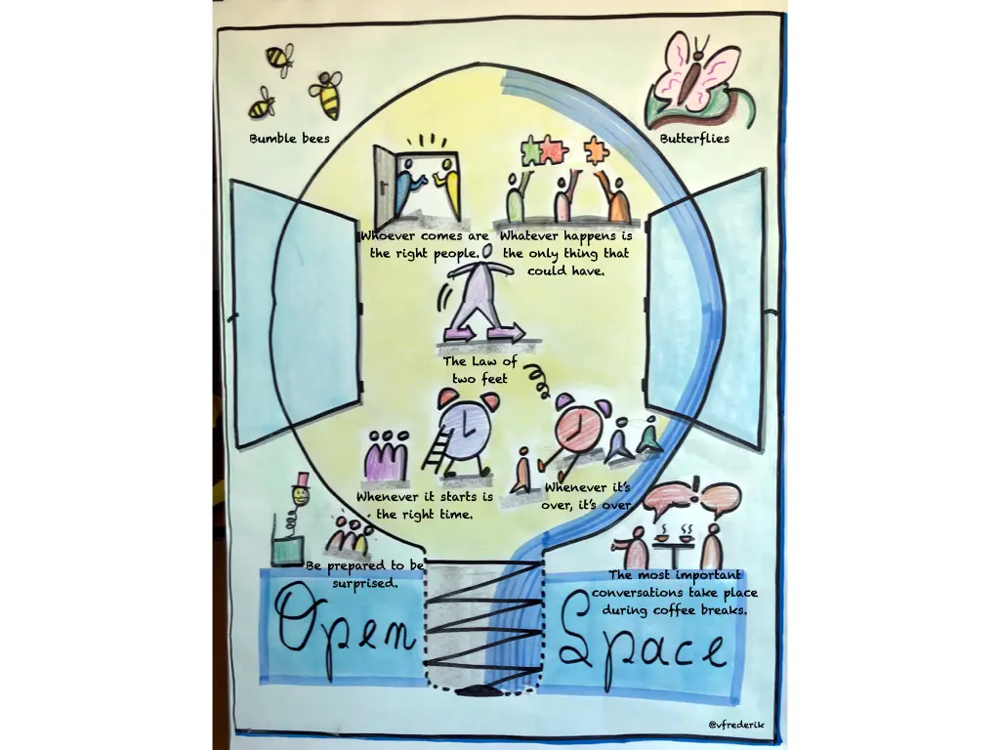
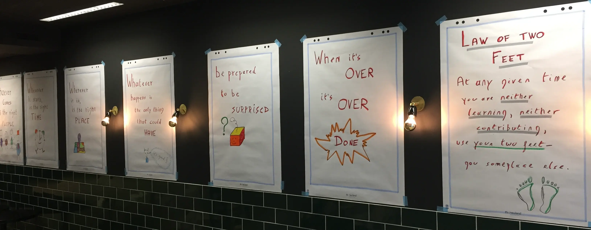

Open Space Technology: Harness Collective Intelligence for Complex Challenges
When traditional approaches fail to address complex challenges, Open Space Technology creates the conditions for breakthrough collaboration. This powerful methodology empowers your team to self-organize around what matters most, transforming how you tackle your most pressing issues. Inclusive Dynamics provides expert facilitation that ensures your Open Space experience delivers meaningful outcomes and lasting impact.

What is Open Space Technology?
In today's complex organizational environment, the most significant challenges often can't be solved through traditional hierarchical approaches. Open Space Technology provides a structured framework that releases the constraints of conventional meetings, allowing the collective intelligence of your group to emerge naturally. Unlike typical facilitation methods, Open Space Technology creates conditions where participants take ownership of both the process and outcomes.
Open Space Technology is a powerful approach for convening groups of any size to collaboratively address complex challenges or opportunities. It operates on a simple premise: allow participants to create and manage their own agenda of parallel working sessions centered around a core theme of strategic importance.
At its heart, Open Space Technology is about letting go of control—a concept that can be particularly challenging for conventionally structured organizations. This deliberate surrender of hierarchical control creates space for authentic engagement and unexpected solutions to emerge.
Open Space Technology is guided by four principles and one law:
- Whoever comes are the right people.
- Whatever happens is the only thing that could have.
- Whenever it starts is the right time.
- When it's over, it's over.
- The Law of Two Feet (or Law of Mobility): If you find yourself in a situation where you are neither learning nor contributing, use your two feet and go somewhere else where you can.
This structure encourages passion, responsibility, and allows the most important topics to surface and be addressed by those who care most.
The Open Space Technology Difference
Traditional meetings often struggle with:
- Limited participation from a few vocal contributors
- Predetermined agendas that miss emerging priorities
- Hierarchical dynamics that suppress important voices
- Rigid structures that inhibit creative thinking
Open Space creates a fundamentally different dynamic where:
- Every participant has equal opportunity to raise issues
- The agenda emerges from real-time priorities
- Self-organization replaces hierarchical control
- Passion and responsibility drive engagement


For more information and resources from the Belgian community, visit openspace-facilitation.eu.
When Open Space Technology Creates Breakthrough Results
Open Space Technology is particularly powerful when your organization faces:
- Complex Challenges Without Clear Solutions: When traditional problem-solving approaches have reached their limits
- Diverse Perspectives That Need Integration: When multiple stakeholders hold pieces of the solution
- Urgent Situations Requiring Rapid Mobilization: When you need to generate momentum quickly around critical issues
- Change Initiatives Requiring Broad Ownership: When implementation depends on genuine commitment across the organization
- Cross-Functional Collaboration Barriers: When silos are preventing effective cooperation
- Innovation Needs That Transcend Hierarchy: When breakthrough thinking requires suspending traditional structures
Organizations typically see transformative results when using Open Space Technology for strategic planning, organizational redesign, community engagement, conflict resolution, and innovation initiatives where diverse perspectives are essential to success.
When Open Space Technology Might Not Be the Right Fit
While powerful in many contexts, Open Space Technology is not a universal solution for every organizational challenge. At Inclusive Dynamics, we carefully assess your specific situation before recommending an approach.
Open Space Technology may not be the optimal choice when:
- A specific, pre-determined outcome is required
- Leadership is not willing to genuinely share control and influence
- The organizational culture strongly punishes honest expression or risk-taking
- The challenge requires primarily technical expertise rather than collective wisdom
- Time constraints don't allow for sufficient self-organization to occur
We believe in matching the right facilitation approach to your unique challenge. Sometimes more structured formats such as Conversation Café, World Café, or focused workshop designs may better serve your needs. We're committed to understanding your specific situation and recommending the most appropriate methodology—whether that's Open Space Technology or another format in our facilitation toolkit.
Expert Open Space Facilitation: The Invisible Art
While Open Space appears simple, its success depends on nuanced facilitation that creates the conditions for self-organization while ensuring productive outcomes. Inclusive Dynamics brings expertise that:
- Crafts the Perfect Invitation: We help you develop a compelling central theme that ignites passion and draws forth what matters most
- Creates Psychological Safety: We establish an environment where authentic participation flourishes across hierarchical boundaries
- Designs the Physical and Virtual Space: We carefully arrange the environment to support the natural flow of conversation and documentation
- Guides Without Controlling: We maintain the integrity of the process while allowing the group's wisdom to emerge naturally
- Ensures Meaningful Documentation: We implement systems that capture insights and commitments for action after the event
- Facilitates Integration: We help the group synthesize diverse conversations into coherent next steps
Our facilitation approach honors the self-organizing principles of Open Space while providing the invisible structure that transforms conversations into meaningful outcomes.
The Transformative Impact of Open Space
Organizations implementing Open Space Technology with expert facilitation experience:
- Authentic Engagement: Participation driven by genuine interest rather than obligation
- Distributed Leadership: Emergence of natural leadership based on passion and expertise
- Accelerated Solutions: Complex issues addressed in days rather than months
- Cross-Boundary Collaboration: New connections that transcend organizational silos
- Unexpected Innovations: Breakthrough ideas that emerge from unlikely combinations of perspectives
- Sustainable Implementation: Higher follow-through due to built-in ownership
- Cultural Transformation: Lasting shifts in how people engage with complex challenges
These outcomes extend far beyond the event itself, creating ripple effects throughout your organization's approach to collaboration and problem-solving.
Open Space in Action: Client Experiences
Strategic Transformation Challenge
A multinational organization facing market disruption used Open Space to engage 150 leaders across departments. In just two days, they identified critical strategic priorities and formed cross-functional teams that developed implementation plans now driving their transformation.
Post-Merger Integration
When two organizations with different cultures merged, tensions were high and collaboration was suffering. An Open Space event created a neutral territory where honest conversations could happen, resulting in new working agreements and collaborative initiatives that bridged the cultural divide.
Innovation Acceleration
A research organization stuck in conventional thinking used Open Space to break through established patterns. The event surfaced unexpected connections between seemingly unrelated projects, leading to three breakthrough innovations now in development.
Ready to Transform How Your Organization Addresses Complex Challenges?
When traditional approaches have reached their limits, Open Space Technology offers a powerful alternative that harnesses your team's collective intelligence.
Schedule a Discovery Call to discuss how an expertly facilitated Open Space event could address your specific organizational challenges.
New to Open Space? Talk to us about whether this approach fits your situation.
Complementary Approaches
Open Space Technology works powerfully on its own and can be enhanced by other approaches in our facilitation toolkit:
- Liberating Structures for more structured participation before or after Open Space
- LEGO® Serious Play® for exploring metaphorical dimensions of challenges
- Visual Facilitation for making emerging patterns visible during synthesis
Explore how we can design a comprehensive approach that addresses your specific needs.